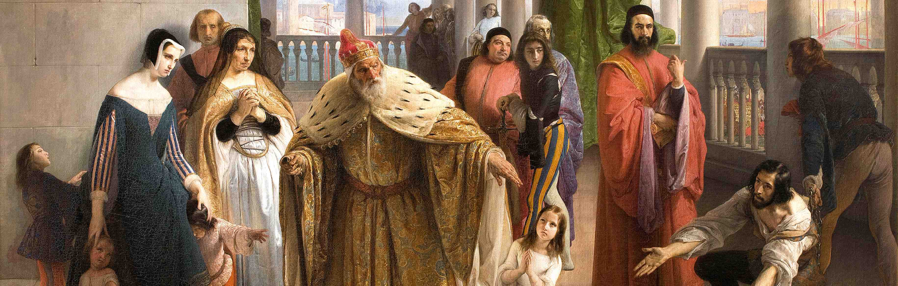

About Beauty
Francesco Hayez and Leo Nucci reviving
i due Foscari

Turandot
and Nikolaus Lehnhoff's production
Der Ring des Nibelungen
Verdi's
I Vespri Siciliani
Verdi's
Don Carlo
Cavalli's
L'Ormindo
Eliogabalo
's exuberance
More